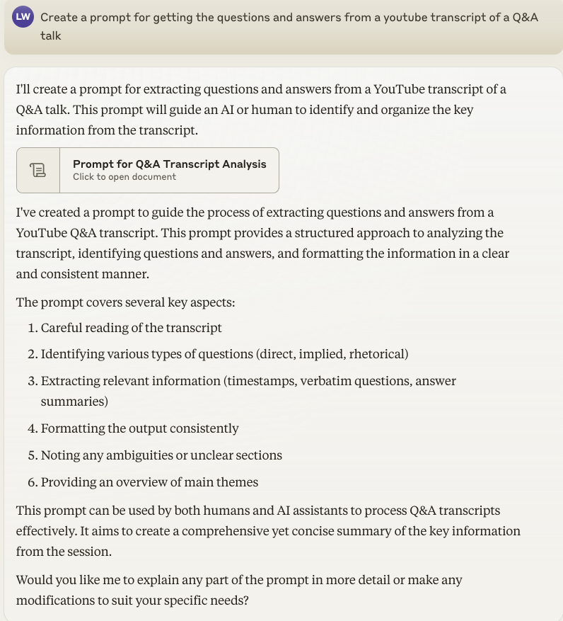
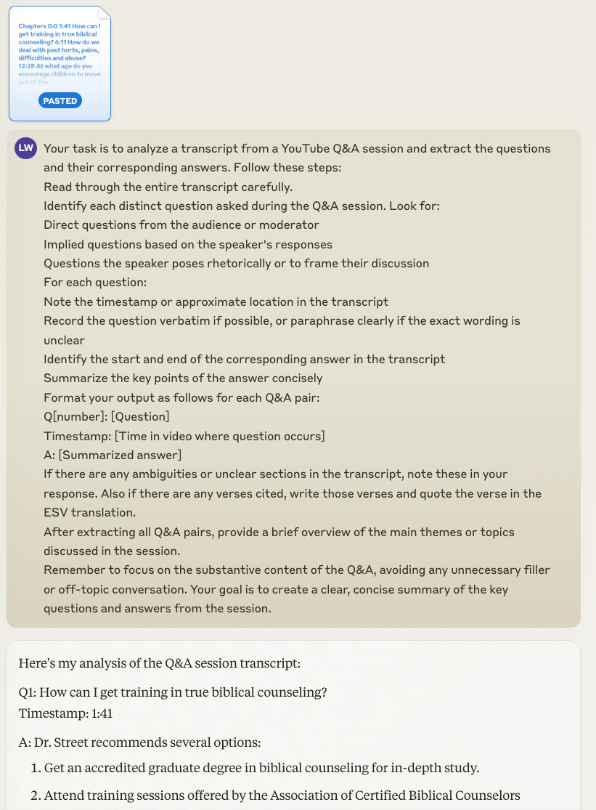

God’s Design for Marriage
My church is hosting a retreat this weekend and we are privileged to have John Street as our speaker. He was planning to speak on God’s Design for Marriage. I was curious whether he had taught similar sessions before. He actually did at FBC Weston back in 2018. Interestingly he gave 6 sessions (5 + a Q&A). To get a preview, I transcribed all of those talks using my transcripts repo and summarized them using Claude 3.5 Sonnet.
Summaries
See below for the summaries:
Steps to Generate Summaries
First I prompted Claude 3.5 Sonnet to create a prompt (I know this is kind of meta) but I rightly assumed the model would generate a better prompt than I would.
Step 1: Prompting an LLM to get a Prompt

My prompt was:
Create a prompt for getting the questions and answers from a youtube transcript of a Q&A talkThe generated Claude artifact was:
Your task is to analyze a transcript from a YouTube Q&A session and extract the questions and their corresponding answers. Follow these steps:
Read through the entire transcript carefully.
Identify each distinct question asked during the Q&A session. Look for:
Direct questions from the audience or moderator
Implied questions based on the speaker's responses
Questions the speaker poses rhetorically or to frame their discussion
For each question:
Note the timestamp or approximate location in the transcript
Record the question verbatim if possible, or paraphrase clearly if the exact wording is unclear
Identify the start and end of the corresponding answer in the transcript
Summarize the key points of the answer concisely
Format your output as follows for each Q&A pair:
Q[number]: [Question]
Timestamp: [Time in video where question occurs]
A: [Summarized answer]
If there are any ambiguities or unclear sections in the transcript, note these in your response.
After extracting all Q&A pairs, provide a brief overview of the main themes or topics discussed in the session.
Remember to focus on the substantive content of the Q&A, avoiding any unnecessary filler or off-topic conversation. Your goal is to create a clear, concise summary of the key questions and answers from the session.Some notes: - I added a line “Also if there are any verses cited, write those verses and quote the verse in the ESV translation.” because I wanted verses to be extracted. - I also generated a different version of this prompt to work on the non-Q&A sections.
This is the non Q&A version:
Your task is to analyze the transcript of a marriage seminar taught by John Street at a church. The transcript includes timestamps. Follow these steps to summarize the main points, arguments, verses, and applications:
Read through the entire transcript carefully.
Identify and categorize the following elements:
a) Main Points: Overarching themes or key ideas presented in the seminar
b) Arguments: Logical reasoning or explanations supporting the main points
c) Verses: Bible verses cited or referenced during the seminar
d) Applications: Practical advice or suggestions for applying the teachings in real life
For each element, note the timestamp where it appears in the transcript.
Summarize each element concisely, capturing the essence of what John Street communicated.
Organize your analysis using the following structure:
Main Points
[Timestamp] [Summarized main point]
[Timestamp] [Summarized main point]
(Continue for all main points)
Arguments
[Timestamp] [Summarized argument]
[Timestamp] [Summarized argument]
(Continue for all significant arguments)
Bible Verses
[Timestamp] [Book Chapter:Verse] - [Brief context or how it was used]
[Timestamp] [Book Chapter:Verse] - [Brief context or how it was used]
(Continue for all verses mentioned)
Practical Applications
[Timestamp] [Summarized application]
[Timestamp] [Summarized application]
(Continue for all practical applications)
After completing the categorized summaries, provide a brief overview (2-3 paragraphs) of the seminar, highlighting:
The central message or theme of the seminar
How the arguments and verses support the main points
The overall approach to marriage presented by John Street
Note any recurring themes, emphasis, or unique perspectives presented throughout the seminar.
If there are any ambiguities or unclear sections in the transcript, mention these in your response.
Remember to focus on the substantive content of the seminar, capturing the essence of John Street's teachings on marriage. Your goal is to create a clear, concise, and well-organized summary that someone could use to quickly understand the key elements of the seminar without listening to the entire recording.
Return your output in pastable markdown.
Use this Youtube URL to generate links to the timestamps: Step 2: Summarize
I took the above prompt and transcript data to generate a summary of the conference talk. I did have to instruct the LLM to return the output in “pastable markdown.”

The markdown genrated by Claude is below:
# Biblical Counseling Q&A Session Summary
## [Q1: How can I get training in true biblical counseling?](https://www.youtube.com/watch?v=CVyerCbKlvY&t=101s)
Dr. Street recommends several options:
1. Get an accredited graduate degree in biblical counseling for in-depth study.
2. Attend training sessions offered by the Association of Certified Biblical Counselors (ACBC).
3. Look for undergraduate programs in biblical counseling at schools like Boyce College or The Master's University.
4. Attend seminars and workshops on biblical counseling.
He emphasizes the importance of ensuring the training adheres to true biblical counseling standards, which can be verified by checking the ACBC website (biblicalcounseling.com) for their statement of faith and practice.
## [Q2: How do we deal with past hurts, pains, difficulties and abuse?](https://www.youtube.com/watch?v=CVyerCbKlvY&t=371s)
Dr. Street provides the following guidance:
1. Understand that we live in a sinful world where bad things happen.
2. Choose whether to let past traumas define you or allow Christ to define you.
3. Focus on doing good and not repaying evil with evil.
4. Seek peace and pursue righteousness.
5. Be prepared to explain your faith and hope to others who notice your changed behavior.
He emphasizes that while traumatic experiences are real, Christians should not let them control their lives, but instead find their identity in Christ.
## [Q3: At what age do you encourage children to move out of the home?](https://www.youtube.com/watch?v=CVyerCbKlvY&t=748s)
Dr. Street provides the following guidelines:
1. There's no specific age, as individual circumstances (like disabilities) may affect this decision.
2. Children should be raised with the expectation of eventually leaving home.
3. Parents should encourage independence when children are physically and mentally capable of supporting themselves.
4. For adult children living at home, parents can implement strategies like charging rent to encourage moving out.
5. Parents should act as a safety net but not enable prolonged dependence.
## [Q4: What do you say to couples living together prior to marriage?](https://www.youtube.com/watch?v=CVyerCbKlvY&t=977s)
Dr. Street strongly advises against cohabitation before marriage:
1. He states that couples living together before marriage are "living openly in sin."
2. He emphasizes that Christians should be different from worldly practices.
3. He advises couples to stop cohabiting, repent, and ask each other for forgiveness.
4. He explains that sexual relationships should only occur within a monogamous, heterosexual marriage.
5. He warns that premarital cohabitation can undermine trust and integrity in the future marriage.
## [Q5: What do Christian parents do when an unmarried couple want to spend the night together in their home?](https://www.youtube.com/watch?v=CVyerCbKlvY&t=1166s)
Dr. Street advises:
1. Parents should not allow unmarried couples to share a room in their home.
2. They should make separate sleeping arrangements, even if it means parents sleeping separately to accommodate guests.
3. Parents shouldn't compromise their principles to accommodate others' ungodliness.
4. While parents can express love in other ways, they shouldn't enable or approve of sinful behavior.
5. This applies to all unmarried couples, regardless of sexual orientation.
## [Q6: How do we help young men and women who are not married but want to become married?](https://www.youtube.com/watch?v=CVyerCbKlvY&t=1353s)
Dr. Street references 1 Thessalonians 4:3-7 and advises:
1. Teach them to choose a spouse based on holiness and honor, not primarily on physical attraction.
2. Encourage them to consider whether their relationship leads to greater holiness for both partners.
3. Help them understand the importance of honoring parents' wisdom in choosing a spouse.
4. Prepare them for the reality that they're marrying someone with flaws, not the idealized version they see while dating.
## [Q7: What role do godly parents play in encouraging their children into a godly marriage?](https://www.youtube.com/watch?v=CVyerCbKlvY&t=1670s)
Dr. Street suggests:
1. Parents should teach their children what Scripture says about marriage.
2. They should guide their children in making decisions about marriage in an honorable and godly way.
3. Parents often have wisdom that younger people lack, even if the parents aren't believers.
4. Children should pay close attention to their parents' input about potential spouses.
5. Parents should help their children realize they're marrying someone with flaws, not a perfect person.
## [Q8: Should married couples live with their in-laws?](https://www.youtube.com/watch?v=CVyerCbKlvY&t=1917s)
Dr. Street provides the following guidance:
1. There's no simple yes or no answer, as circumstances vary.
2. Living with in-laws can be necessary for caregiving or financial reasons.
3. Generally, it's not the best arrangement for newly married couples.
4. If couples do live with in-laws, it's crucial to maintain proper boundaries and priorities.
5. The married couple must present a unified front and prioritize their relationship over parental relationships.
6. The husband and wife should always side with each other, not their respective parents.
## [Q9: How do I make my husband a priority when I have a career?](https://www.youtube.com/watch?v=CVyerCbKlvY&t=2164s)
Dr. Street advises:
1. It's not wrong for a woman to have a career, but it shouldn't dictate family priorities.
2. A woman's primary responsibility should be to her husband, children, and home, not her career.
3. Husbands should take leadership in providing for the family financially.
4. Both spouses should work together to balance career and home responsibilities.
5. Husbands should actively help with household tasks, especially if both spouses work outside the home.
## [Q10: Can I have a calling at work as a woman?](https://www.youtube.com/watch?v=CVyerCbKlvY&t=2470s)
Dr. Street states:
1. There is no special "calling" for women in careers in the same way as pastoral ministry.
2. Women can have successful careers and be well-accomplished professionally.
3. Careers can be used in good and godly ways, including in Christian service.
4. However, a woman's home and husband should always be her top priority.
5. Women should ensure their career doesn't overshadow their primary responsibilities to family and home.
## [Q11: What are some basic principles to apply if a Christian is married to a non-Christian?](https://www.youtube.com/watch?v=CVyerCbKlvY&t=2674s)
Dr. Street provides the following guidance based on 1 Peter 3:
1. For wives with unbelieving husbands, follow 1 Peter 3:1-6 as your guide.
2. For husbands with unbelieving wives, follow 1 Peter 3:7.
3. Focus on unity with other Christians, sympathy, love, and humility.
4. Don't repay evil with evil, but bless others instead.
5. Seek peace and pursue righteousness.
6. Be prepared to explain your faith when your spouse asks about your changed behavior.
7. View yourself as God's missionary to your unbelieving spouse.
8. Live out your faith consistently, even in the face of difficulties.
## Main Themes of the Q&A Session:
1. Biblical approach to counseling and dealing with past traumas
2. Christian perspectives on marriage, cohabitation, and family life
3. Balancing career and family responsibilities, especially for women
4. Parenting adult children and encouraging independence
5. Navigating relationships with in-laws
6. Guidance for Christians married to non-believers
7. The importance of maintaining biblical standards in a secular culture
The session emphasizes a strong commitment to biblical principles in all aspects of life, particularly in marriage and family relationships. It also stresses the importance of distinctively Christian behavior in contrast to worldly practices.